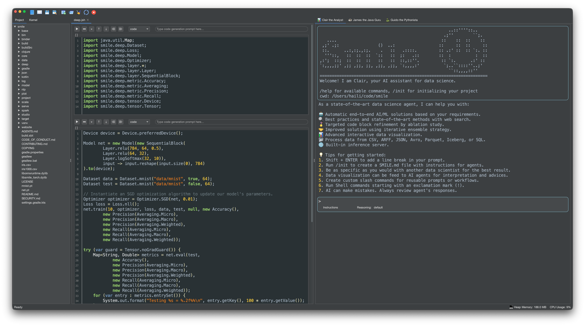

{% include "toc.njk" %}

<div class="col-md-9 order-md-first">
    <h1 id="studio-top" class="title">SMILE Studio</h1>

    <p><strong>SMILE Studio</strong> is an integrated desktop IDE for machine learning and data science.
       It combines an interactive multi-language notebook, an AI-powered agent panel, a file explorer,
       and a kernel explorer in a single window.
       Launch it from the release package:</p>

    <div class="code-playground glass" data-lang="bash">
  <div class="playground-toolbar">
    <span class="lang-tab is-active">Bash</span>
    <span class="toolbar-spacer"></span>
    <button type="button" class="btn btn-ghost btn-sm playground-copy">Copy</button>
    {% include "components/playground-extra-actions.njk" %}
  </div>
  <pre class="playground-source language-bash"><code class="language-bash">
cd bin
./setup    # first-time: installs native libraries
./smile    # launches SMILE Studio
    </code></pre>
  <div class="playground-editor" hidden></div>
</div>

    <p>SMILE Studio requires <strong>Java 25</strong> and a graphical (non-headless) environment.
       At least 4 GB RAM; 8 GB recommended for large datasets.
       Open Studio from your <em>project</em> directory so the file tree, notebooks, and
       <code>SMILE.md</code> memory file all live next to your data.</p>

    <h2 id="studio-first">Your First Session</h2>

    <ol>
        <li>Download the latest <code>smile-&lt;version&gt;.zip</code> from the
            <a href="https://github.com/haifengl/smile/releases/latest">releases page</a>
            and unzip it.</li>
        <li>Run first-time setup (BLAS/LAPACK, Python venv — see
            <a href="quickstart.html#gpu-libtorch">Quick Start</a>):
            <code>/path/to/smile/bin/setup</code></li>
        <li>Create a project folder and put datasets in <code>input/</code>:
            <code>mkdir -p myproject/input</code></li>
        <li>Launch Studio <em>from that folder</em>:
            <code>cd myproject &amp;&amp; /path/to/smile/bin/smile</code></li>
        <li>Configure an AI provider under <strong>File &gt; Settings…</strong>
            (needed for agents, cell prompts, and Tab completion).</li>
        <li>In Clair’s tab, run <code>/init</code> to profile the project and write
            <code>SMILE.md</code>. Then use natural language, <code>/automl</code>,
            or open a notebook and work through the
            <a href="tutorial.html">Tutorial</a> examples cell by cell.</li>
    </ol>

    <h2 id="studio-layout">Application Layout</h2>

    <p></p>

    <div class="table-responsive">
    <table class="table table-striped table-bordered">
      <thead><tr><th>Panel</th><th>Description</th></tr></thead>
      <tbody>
        <tr><td><strong>Notebook</strong> (center)</td>
            <td>Multi-cell editor supporting Java (JShell), Scala, and Python kernels.
                Supports <code>.java</code>, <code>.jsh</code>, <code>.scala</code>,
                <code>.sc</code>, <code>.py</code>, and <code>.ipynb</code> files.</td></tr>
        <tr><td><strong>AI Agent Panel</strong> (right)</td>
            <td>Three built-in agents: <em>Clair the Analyst</em> (end-to-end ML),
                <em>James the Java Guru</em> (Java/SMILE), and
                <em>Guido the Pythonista</em> (Python). Supports slash commands,
                shell execution, and long-term memory via <code>SMILE.md</code>.</td></tr>
        <tr><td><strong>Project Explorer</strong> (left)</td>
            <td>File tree of the current working directory.
                Double-click any supported source file to open it in the notebook.</td></tr>
        <tr><td><strong>Kernel Explorer</strong> (left)</td>
            <td>Live view of runtime variables grouped by type (DataFrames, Matrices, Models, Services).
                Double-click a Model node to save it as a <code>.sml</code> file and register
                it as an inference service.</td></tr>
      </tbody>
    </table>
    </div>

    <h2 id="studio-notebook">Using the Notebook</h2>

    <p><strong>File &gt; New</strong> creates an <code>Untitled.java</code> notebook
       with SMILE imports already filled in. <strong>File &gt; Open…</strong> or
       double-click a file in the Project Explorer loads
       <code>.java</code> / <code>.jsh</code>, <code>.scala</code> / <code>.sc</code>,
       <code>.py</code>, or <code>.ipynb</code>. Other text files open in the Notepad
       instead of the notebook.</p>

    <p>Each cell has a type combobox (<strong>Code</strong>, <strong>Markdown</strong>,
       or <strong>Raw</strong>), a <strong>Prompt</strong> field for AI code generation,
       and a toolbar to run, move, clear, or delete the cell. Execution is asynchronous;
       a second Run while a cell is still running shows a warning rather than overlapping
       jobs. After a successful snippet, Studio prints the last value
       (for example <code>⇒ DataFrame df = [200 rows × 5 columns]</code>).</p>

    <p>Save with <strong>File &gt; Save</strong>. Enable <strong>File &gt; Auto Save</strong>
       to write every 60 seconds (only notebooks that already have a path).
       If another process changes an open file, Studio asks whether to reload.</p>

    <h2 id="studio-explorers">Project and Kernel Explorers</h2>

    <p>The left split has two tabs:</p>
    <ul>
        <li><strong>Project</strong> — file tree of the working directory.
            Double-click a notebook/script to open it; double-click other text
            files to open them in Notepad.</li>
        <li><strong>Kernel</strong> — live variables from the active notebook,
            grouped as DataFrames, Matrix, Models, and Services.
            Double-click a DataFrame or matrix to open a viewer; double-click a
            Model to save a <code>.sml</code> file; double-click a Service to
            start a REST inference server for that model.</li>
    </ul>

    <h2 id="studio-kernels">Execution Kernels</h2>

    <div class="table-responsive">
    <table class="table table-striped table-bordered">
      <thead><tr><th>Kernel</th><th>How to use</th><th>Notes</th></tr></thead>
      <tbody>
        <tr><td><strong>Java (JShell)</strong></td>
            <td>Open or create a <code>.java</code> / <code>.jsh</code> notebook</td>
            <td>Runs in a separate JVM; ZGC, 75% max RAM. New notebooks are
                pre-populated with all SMILE imports.</td></tr>
        <tr><td><strong>Scala</strong></td>
            <td>Open a <code>.scala</code> / <code>.sc</code> notebook</td>
            <td>JSR-223 script engine; all SMILE Scala operators available.</td></tr>
        <tr><td><strong>Python (iPython)</strong></td>
            <td>Open a <code>.py</code> / <code>.ipynb</code> notebook</td>
            <td>Requires <code>pip install ipython</code>.</td></tr>
      </tbody>
    </table>
    </div>

    <h2 id="studio-shortcuts">Key Shortcuts</h2>

    <div class="table-responsive">
    <table class="table table-condensed table-bordered">
      <thead><tr><th>Shortcut</th><th>Action</th></tr></thead>
      <tbody>
        <tr><td><code>Ctrl + Enter</code></td><td>Run cell, stay in current cell</td></tr>
        <tr><td><code>Shift + Enter</code></td><td>Run cell, move to next cell (creates one if needed)</td></tr>
        <tr><td><code>Alt + Enter</code></td><td>Run cell, insert new cell below</td></tr>
        <tr><td><code>Tab</code></td><td>AI-powered line completion (requires AI service configured)</td></tr>
        <tr><td><code>Ctrl + =</code> / <code>Ctrl + -</code></td><td>Increase / decrease font size globally</td></tr>
      </tbody>
    </table>
    </div>

    <h2 id="studio-magic">Magic Commands</h2>

    <p>Notebook cells can run kernel-specific magics without leaving the editor.</p>

    <ul class="nav nav-tabs" role="tablist">
        <li class="nav-item" role="presentation"><button class="nav-link active" data-bs-toggle="tab" data-bs-target="#magic_java" type="button" role="tab">Java</button></li>
        <li class="nav-item" role="presentation"><button class="nav-link" data-bs-toggle="tab" data-bs-target="#magic_python" type="button" role="tab">Python</button></li>
    </ul>
    <div class="tab-content">
        <div class="tab-pane fade show active" role="tabpanel" id="magic_java">
            <p>In a Java cell, lines starting with <code>//!</code> are intercepted
               before they reach JShell. The supported magic resolves a Maven
               artifact (transitively) and adds it to the JShell classpath at
               runtime — no kernel restart required:</p>
            <div class="code-playground glass" data-lang="java">
  <div class="playground-toolbar">
    <span class="lang-tab is-active">Java</span>
    <span class="toolbar-spacer"></span>
    <button type="button" class="btn btn-ghost btn-sm playground-copy">Copy</button>
    {% include "components/playground-extra-actions.njk" %}
  </div>
  <pre class="playground-source language-java"><code class="language-java">
//!mvn org.apache.commons:commons-math3:3.6.1
    </code></pre>
  <div class="playground-editor" hidden></div>
</div>
        </div>
        <div class="tab-pane fade" role="tabpanel" id="magic_python">
            <p>Python notebooks use IPython’s built-in magics (line magics with
               <code>%</code>, cell magics with <code>%%</code>). See IPython’s
               <a href="https://ipython.readthedocs.io/en/stable/interactive/magics.html">magic command reference</a>
               for the full list. Common examples:</p>
            <div class="code-playground glass" data-lang="python">
  <div class="playground-toolbar">
    <span class="lang-tab is-active">Python</span>
    <span class="toolbar-spacer"></span>
    <button type="button" class="btn btn-ghost btn-sm playground-copy">Copy</button>
    {% include "components/playground-extra-actions.njk" %}
  </div>
  <pre class="playground-source language-python"><code class="language-python">
%pip install pandas
%time df.describe()
%%timeit
model.fit(X, y)
    </code></pre>
  <div class="playground-editor" hidden></div>
</div>
        </div>
    </div>

    <h2 id="studio-ai">AI Agents</h2>

    <p>The right-hand <strong>Agent Panel</strong> ships with three built-in agents,
       each in its own tab. Switch between them depending on the task:</p>

    <div class="table-responsive">
    <table class="table table-striped table-bordered">
      <colgroup>
        <col style="width: 12rem;">
        <col>
      </colgroup>
      <thead><tr><th>Agent</th><th>Role</th></tr></thead>
      <tbody>
        <tr><td style="white-space:nowrap;"><strong>Clair the Analyst</strong></td>
            <td>End-to-end ML workflow: load data, visualize, train, evaluate, and serve models.</td></tr>
        <tr><td style="white-space:nowrap;"><strong>James the Java Guru</strong></td>
            <td>Java and SMILE API help: code generation, reviews, and notebook completion.</td></tr>
        <tr><td style="white-space:nowrap;"><strong>Guido the Pythonista</strong></td>
            <td>Python notebook assistance and data-science library guidance.</td></tr>
      </tbody>
    </table>
    </div>

    <p>All three require an AI provider (OpenAI, Anthropic, Google Gemini, Azure OpenAI,
       or Vertex AI) and API key under <strong>File &gt; Settings…</strong>.
       MCP (Model Context Protocol) servers can be wired in via
       <code>.smile/mcp.json</code> for extra tools.</p>

    <h3 id="studio-prompts">Prompts</h3>

    <p>You can drive the agents from two places:</p>
    <ul>
        <li><strong>Notebook cell Prompt field</strong> — type a natural-language
            description (e.g. “load iris.csv into a DataFrame”) and press
            <kbd>Enter</kbd>. Generated code streams into the cell editor.
            Press <kbd>Tab</kbd> in the editor for single-line completion.</li>
        <li><strong>Agent Panel</strong> — send an <em>Instructions</em> turn
            (legend <code>&gt;</code>) for a conversation, or a <em>Shell</em>
            turn (legend <code>!</code>) to run a subprocess. Agents keep
            project context in <code>SMILE.md</code>.</li>
    </ul>

    <h3 id="studio-slash">Slash Commands</h3>

    <p>In the Agent Panel, type <code>/</code> followed by a command and press
       <kbd>Ctrl</kbd>+<kbd>Enter</kbd>. A hint tooltip appears as you type.
       Session, memory, and CLI commands are shared; the longer skill list below
       is what <strong>Clair</strong> exposes for end-to-end ML work.
       Type <code>/help</code> in a given agent tab for that agent’s full set.</p>

    <h4 id="studio-slash-session">Session, memory, and tools</h4>
    <div class="table-responsive">
    <table class="table table-condensed table-bordered">
      <colgroup>
        <col style="width: 14rem;">
        <col>
      </colgroup>
      <thead><tr><th>Command</th><th>Description</th></tr></thead>
      <tbody>
        <tr><td style="white-space:nowrap;"><code>/memory show</code></td><td>Display the content of long-term memory</td></tr>
        <tr><td style="white-space:nowrap;"><code>/memory add</code></td><td>Add facts or notes to long-term memory</td></tr>
        <tr><td style="white-space:nowrap;"><code>/memory edit</code></td><td>Open a notepad to edit the long-term memory</td></tr>
        <tr><td style="white-space:nowrap;"><code>/memory refresh</code></td><td>Reload the context from disk</td></tr>
        <tr><td style="white-space:nowrap;"><code>/plan</code></td><td>Enter plan mode</td></tr>
        <tr><td style="white-space:nowrap;"><code>/plan off</code></td><td>Exit plan mode</td></tr>
        <tr><td style="white-space:nowrap;"><code>/clear</code></td><td>Clear the current conversation session</td></tr>
        <tr><td style="white-space:nowrap;"><code>/compact</code></td><td>Summarize the conversation and retain critical details</td></tr>
        <tr><td style="white-space:nowrap;"><code>/edit</code></td><td>Edit a file with the notepad</td></tr>
        <tr><td style="white-space:nowrap;"><code>/open</code></td><td>Open a file with the default application</td></tr>
        <tr><td style="white-space:nowrap;"><code>/find-docs</code></td><td>Retrieve up-to-date documentation, API references, and code examples</td></tr>
        <tr><td style="white-space:nowrap;"><code>/changelog</code></td><td>Create a customer-friendly changelog from git commits</td></tr>
        <tr><td style="white-space:nowrap;"><code>/pptx</code></td><td>Create a PowerPoint presentation</td></tr>
        <tr><td style="white-space:nowrap;"><code>/skill-creator</code></td><td>Create, improve, and measure agent skills</td></tr>
      </tbody>
    </table>
    </div>

    <h4 id="studio-slash-cli">Train, predict, and serve</h4>
    <div class="table-responsive">
    <table class="table table-condensed table-bordered">
      <colgroup>
        <col style="width: 14rem;">
        <col>
      </colgroup>
      <thead><tr><th>Command</th><th>Description</th></tr></thead>
      <tbody>
        <tr><td style="white-space:nowrap;"><code>/train</code></td><td>Train a machine learning model</td></tr>
        <tr><td style="white-space:nowrap;"><code>/predict</code></td><td>Run batch inference</td></tr>
        <tr><td style="white-space:nowrap;"><code>/serve</code></td><td>Start an inference service</td></tr>
      </tbody>
    </table>
    </div>

    <h4 id="studio-slash-clair">Clair skills</h4>
    <div class="table-responsive">
    <table class="table table-condensed table-bordered">
      <colgroup>
        <col style="width: 16rem;">
        <col>
      </colgroup>
      <thead><tr><th>Command</th><th>Description</th></tr></thead>
      <tbody>
        <tr><td style="white-space:nowrap;"><code>/init</code></td><td>Initialize a data analysis project from one or more data files: load data, profile structure and quality, detect column-name issues, generate summary statistics, identify key patterns, and write <code>SMILE.md</code></td></tr>
        <tr><td style="white-space:nowrap;"><code>/summarize</code></td><td>Analyze a tabular data file and produce a comprehensive summary (structure, quality, statistics, patterns, visualizations) without asking what to do next</td></tr>
        <tr><td style="white-space:nowrap;"><code>/exploratory-data-analysis</code></td><td>Systematic EDA on tabular data: structure, quality, distributions, relationships, and anomalies before modelling</td></tr>
        <tr><td style="white-space:nowrap;"><code>/preprocess</code></td><td>Clean, repair, and prepare raw tabular datasets for model readiness</td></tr>
        <tr><td style="white-space:nowrap;"><code>/resampling</code></td><td>Balance class distributions with oversampling, undersampling, or hybrid resampling</td></tr>
        <tr><td style="white-space:nowrap;"><code>/feature-engineering</code></td><td>Select, create, transform, and validate input features</td></tr>
        <tr><td style="white-space:nowrap;"><code>/deep-feature-synthesis</code></td><td>Generate features from multi-table relational data via Featuretools (Deep Feature Synthesis)</td></tr>
        <tr><td style="white-space:nowrap;"><code>/caafe</code></td><td>Context-Aware Automated Feature Engineering from a natural-language dataset description</td></tr>
        <tr><td style="white-space:nowrap;"><code>/model-selection</code></td><td>Choose a model family from problem type, data characteristics, and constraints</td></tr>
        <tr><td style="white-space:nowrap;"><code>/hyperparameter-tuning</code></td><td>Search for an optimal hyperparameter configuration within a compute budget</td></tr>
        <tr><td style="white-space:nowrap;"><code>/neural-architecture-search</code></td><td>Design and optimize neural network architectures for a task, dataset, and hardware</td></tr>
        <tr><td style="white-space:nowrap;"><code>/model-evaluation</code></td><td>Evaluate and compare models with task-appropriate metrics, visualizations, and statistical tests</td></tr>
        <tr><td style="white-space:nowrap;"><code>/postprocess</code></td><td>Calibrate and interpret raw predictions into user-ready outputs</td></tr>
        <tr><td style="white-space:nowrap;"><code>/automl</code></td><td>End-to-end automated pipeline: EDA, preprocessing, features, model selection, tuning, architecture search, ensembling, postprocessing, and evaluation</td></tr>
      </tbody>
    </table>
    </div>

    <div id="btnv">
        <span class="btn-arrow-left">&larr; &nbsp;</span>
        <a class="btn-prev-text" href="quickstart.html" title="Previous Section: Quick Start"><span>Quick Start</span></a>
        <a class="btn-next-text" href="tutorial.html" title="Next Section: Tutorial"><span>Tutorial</span></a>
        <span class="btn-arrow-right">&nbsp;&rarr;</span>
    </div>
</div>
